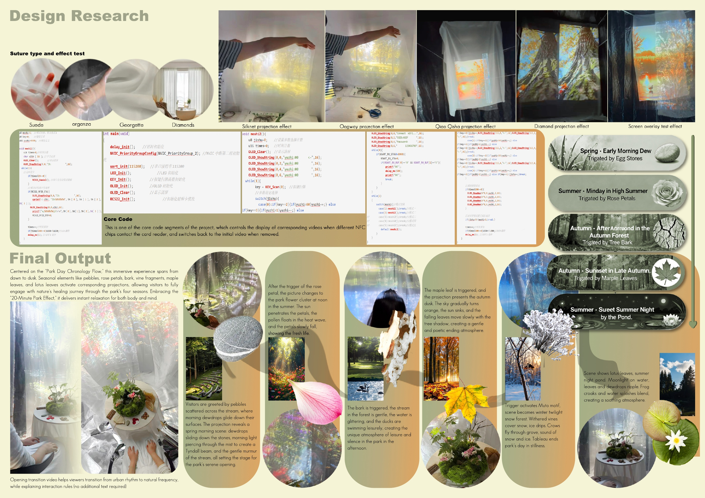

Designer / Spatial storyteller
ZIWEI
ZHENG
I shape ideas into tangible, immersive experiences.
Working across interaction, spatial storytelling & speculative design. Thoughtful in approach. Expressive in form.
(01—04) SELECTED WORKIDEAS MADE VISIBLE
A little about my practice ↘
Between physical
and digital.
Always human.
I’m Ziwei, a designer studying MA Design Informatics at The University of Edinburgh, with a background in Public Art.
I explore how materials, spaces and interactive media can create meaningful human experiences.
Interaction & experience design01
Physical prototyping & spatial storytelling02
Speculative design & visual narratives03